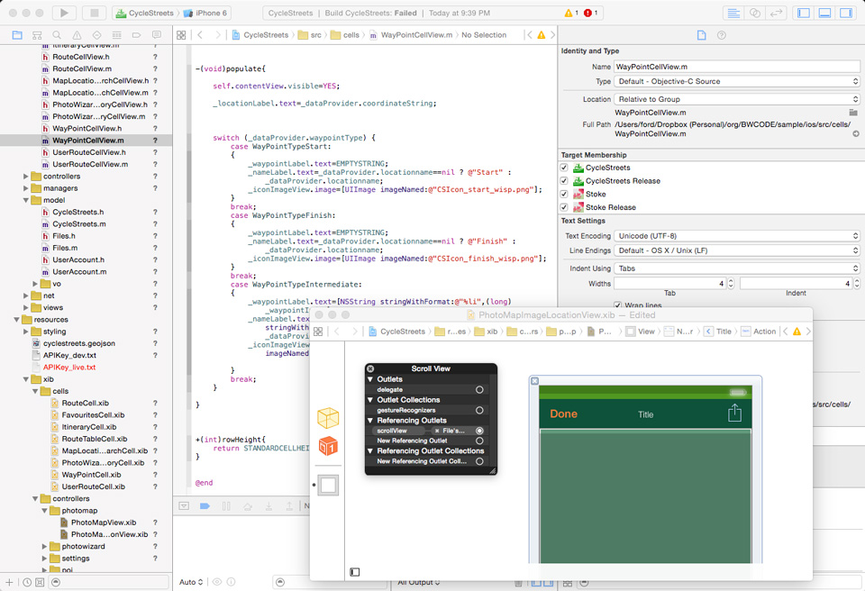

6
How Are Apps Made?
One of the privileges of owning a Mac is that you can download a program by Apple called Xcode. This is an IDE, an Integrated Development Environment.
It’s an enormous download, more than 2 gigabytes, or roughly the size of an hour of DVD-quality video. Xcode is the heart of Apple. It’s not only how the company writes software, it’s the tool for everyone who wants to write software for the Mac or iPhone.

Within Xcode are whole worlds to explore. For example, one component is the iOS SDK (Software Development Kit). You use that to make iPhone and iPad apps. That SDK is made up of dozens and dozens of APIs (Application Programming Interfaces). There’s an API for keeping track of a user’s location, one for animating pictures, one for playing sounds, and several for rendering text on the screen and collecting information from users. And so forth.
Maybe you’re starting to see some strands here. Remember the way the Smalltalk environment worked, a screen with a bunch of windows? There are powerful echoes in Xcode.
There are other ways of working—I tend to do most of my code in a text editor with a black background, far less to see at first glance, though actually just as complex—but this right here is some serious code life. You fill out some fields, wire some things together (really, sometimes it’s done by connecting virtual wires into virtual holes), and start coding.
When someone from Apple stands onstage and announces some new thing that ends with “Kit,” such as ResearchKit or HealthKit—or WatchKit, the set of routines specifically for the Apple Watch—Xcode is where those kits will land, fully documented, to be used to make software.
Some functions are reserved for the manufacturer. You know how Apple is touting that you can track someone’s heartbeat using an Apple Watch? Apple hasn’t documented how to do it yet, not for the world. Maybe the company is worried that you’ll misuse it somehow. Perhaps heartbeat monitoring requires careful battery management, and because the watch already has battery issues, Apple wants to avoid making things worse by letting anyone in there. It’s likely that people are trying to figure out how to access that heartbeat API right now, though. That’s just the way people are.
Apple is really good at all of this. It publishes interface guidelines and gives people tools for arranging app interfaces in predictable ways that end users will find familiar. It sets the flow with which to go.
Let’s say you’re making a podcasting application, and playing an audio file is a key feature. Great. Create an object of class AVAudioPlayer, and add a button to the screen, then connect that button to the code so that when clicked, the button sends the message “play.”
There’s a lot going on at once, so you want to leave it to the operating system to keep track of where windows are. It’s up to an IDE to help you connect your ideas into this massive, massive world with tens of thousands of methods so you can play a song, rewind a song, keep track of when the song was played (meaning you also need to be aware of the time zones), or keep track of the title of the song (which means you need to be aware of the language of the song’s title—and know if it displays left-to-right or right-to-left).
You should also know the length of the song, which means you need a mechanism for extracting durations from music files. Once you have that—say, it’s in milliseconds—you need to divide it by 1,000, then 60, to get minutes. But what if the song is a podcast and 90 minutes long? Do you want to divide further to get hours? So many variables. Gah!
I guess you have problems to solve after all. The IDE doesn’t do everything for you.
The greatest commercial insight of the technology industry is that if you control a computing environment, you can move the market. You can change the way people do things, the way they listen to music, watch videos, and respond to advertising. People who work at technology companies are supposed to take an idea and multiply it by a few million people, yielding a few billion dollars.
A great way to do that is to wrap up your intentions in APIs and SDKs and IDEs. That’s why so much software to make software is free: It stimulates the development of even more software.
Sometimes this is the result of corporate ambition: Java was very much a Sun product, down to the class library; the same is true of C# for Microsoft. But much of the code in the world is freely available, created by generous volunteers over decades to serve their own needs. The give-and-take between corporations and programming languages is complex. Some language developers are hired to work on their open-sourced languages; Go and Python have been funded, to varying degrees, by Google; and the creator of PHP works at Etsy.
Apple and Microsoft, Amazon and Google: factory factories. Their APIs are the products of many thousands of hours of labor from many programmers. Think of the work involved. Someone needs to manage the SDK. Hundreds of programmers need to write the code for it. People need to write the documentation and organize the demos. Someone needs to fight for a feature to get funded and finished. Someone needs to make sure the translation into German is completed and that there aren’t any embarrassing mistakes that go viral on Twitter. Someone needs to actually write the software that goes into making the IDE work.
The modern OS is a feast of wonders: fast video, music players, buckets of buttons. Apple may be the best imaginary button maker in history. Just the bezels are a work to behold. Today there are 15 bezel styles, from NSThickSquareBezelStyle to NSSmallSquareBezelStyle.35 Freedom. (Sort of. They’re still just bezels.) Things that used to require labor and care—showing a map, rotating a giant 3D landscape—can now be done with a few lines of code.
When everyone goes to Apple’s annual Worldwide Developers Conference in San Francisco and they stare rapturously as some man in an untucked, expensive shirt talks about “core data,” this is the context. Onstage, presenting its Kits, Apple is rearranging abstractions, saying: Look at the new reality we’ve defined, the way that difficult things are now easy and drab things can be colorful. Your trust in our platform and your dedication of thousands of hours of time have not been misplaced.
They’ve pitched variations on this annually for 30 years.
In Xcode you can compile everything with one command, and up pops your software for testing. You can see the button you made. You need to click on it. It yearns for clicks. It cries out in a shrill signaling voice like a nano cat on a microfence. Everything inside a computer beseeches everything else. It’s a racket. You click your mouse, and the button cat is finally satisfied. Now the computer can increase the volume, change the color, or bring out the talking paper clip. Destiny fulfilled and, after many rounds of this, test complete.
When your app is done, you may sell it in an app store. And if users are excited to use your app, they’ll be motivated to buy more apps. Loops upon loops, feeding into one another, capital accruing to the coffers of the patient software giants. An ecosystem. “Ecosystem” is another debased word, especially given what we keep doing to the real, physical one around us. But if a few hundred thousand people are raising their kids and making things for 100 million people, that’s what they call it.
6.1: The Framework: Wilder, Younger Cousin of the Software Development Kit
Odds are, if you’re doing any kind of programming, especially Web programming, you’ve adopted a framework. Whereas an SDK is an expression of a corporate philosophy, a framework is more like a product pitch. Want to save time? Tired of writing the same old code? Curious about the next new thing? You use a graphics framework to build graphical applications, a Web framework to build Web applications, a network framework to build network servers. There are hundreds of frameworks out there; just about every language has one.
A popular Web framework is Django, which is used for coding in Python. Instagram was bootstrapped on it. When you sit down for the first time with Django, you run the command "startproject," and it makes a directory with some files and configuration inside. This is your project directory. Now you have access to libraries and services that add to and enhance the standard library.
Suppose we’re still making our bookstore, the Amazonesque one with the relational database that we started a few pages back. With Django, we run the "startproject" command. You might tell it to start an app called bookstore. Then you’d “set up your models,” meaning you’d start to define how your data looks, using Python’s idioms, which the framework will translate into database-ese.

So now we can make a book catalog. (Obviously we need to add authors and the like.) The incredibly neat thing is that with a few more lines of configuration you have a completely functional, working Web-based article editor; to wit:

That’s called the “admin” view, and it’s always been a main feature of Django. Your work as a programmer has just started, but very soon after the moment of conception, your users—journalists, if you’re building a publishing platform, or alpha testers, or maybe just you, in a testing frame of mind—can start to play with your baby, entering books, trying things out.
Take a moment on that. You learn a programming language like Python. You need to make a website that allows a few dozen people to enter data at once. You write a few lines of Python code and set up accounts for people using the admin, and they can start to enter that data. If you do it a few times, you can get very good at this sort of work. You can get a team started on a project in a few hours.
Remember those issues about entering e-mail addresses? If you use Django, you can use "EmailField," and many of them are taken care of. Ditto many of the security concerns that arise when building websites, the typical abuses people perpetrate. You have entered into a pool with many thousands of other programmers who share the framework, use it, and suggest improvements; who write tutorials; who write plug-ins that can be used to accomplish tasks related to passwords, blogging, managing spam, providing calendars, accelerating the site, creating discussion forums, and integrating with other services. You can think in terms of architecture.
Magnificent! Wonderful! So what’s the downside? Well, frameworks lock you into a way of thinking. You can look at a website and, with a trained eye, go, “Oh, that’s a Ruby on Rails site.”
Frameworks have an obvious influence on the kind of work developers can do. Some people feel that frameworks make things too easy and that they become a crutch. It’s pretty easy to code yourself into a hole, to find yourself trying to force the framework to do something it doesn’t want to. Django, for example, isn’t the right tool for building a giant chat application, nor would you want to try competing with Google Docs using a Django backend. You pay a price in speed and control for all that convenience. The problem is really in knowing how much speed, control, and convenience you need.
Programmers talk about “premature optimization”—overthinking your code before you know what the real problems will be—and describe people who overthink programming as “architecture astronauts.” There’s another tendency, NIH (“not invented here”), that comes up a lot.
Frameworks can feel a little insulting, because they anticipate your problems and are used by thousands of people. They imply that yours are common, everyday problems, rather than special, amazing mysteries that require a true genius to solve.
The opinions of a framework are strong, but not as strong as an SDK. Those are tightly bundled, often commercial, and arrive with PR trumpets blasting, especially when they’re from Apple or Microsoft. Frameworks tend to be derived from frustration and on first release are bound with tape and thrust onto the Web with a blog post. From there they survive—or not. There are Web application frameworks for every major language; one Wikipedia listing shows almost 40 different frameworks for Java alone and almost 30 for PHP.
Most of the good frameworks are free, released to solve problems and bring glory and influence to their creators, rather than great riches and control. They spread organically. People see a video tutorial showing them how to make a blog in a few minutes. Then they copy that work and say, “That was easy,” and show their friends. Websites go live, and programmers talk about how quickly they developed said websites.
If you’re building a Web app, you’d be a fool not to use a Web framework at first. There are tiny ones for control freaks, focused on URL routing, and massive ones like Django and Rails, which pursue the goals first outlined by large systems such as Smalltalk in days of yore: to enable the development of large, collaborative systems where data can be manipulated and shared. Take the work that’s been done for you. DRY (don’t repeat yourself).
6.2: What Is Debugging?
In programming, there are as many ways to destroy something as to create something. One stray character is all that’s required. Say you forget a semicolon or use an accented “é” somewhere, but the code is not prepared for such a peculiarity—KABOOM! Or you add two things together, but one is the numeral 4 and the other is “4” as a string, as you might use to say “4 and 20 blackbirds baked in a pie.” To the computer, that “4 and 20” has no numeric significance.
This sort of thing really happens, and part of the job is remembering that 4 + 20 is 24 and 4 + “20” is “420”.
Programming is debugging. It’s the expectation that things won’t work. This is not something people bring up, just like they don’t bring up their medical history on the first date. Most languages have constructs built in for catching failures, trapping them like wild animals, examining them, and, well, exterminating them. In time, as the relationship between you and a programming language blossoms, you come to realize that what truly characterizes a language is not what it does, but how it tells you what broke. Most of your programming life will be spent trying to figure out what broke, and if the computer helps you, maybe you can watch your kids play soccer.
When I started programming I felt that each time the program crashed, I’d failed. I found myself cringing, desperate, unable to move forward. There’s even a novel by Ellen Ullman, The Bug, about the anxieties and social complexities that arise when a serious bug is hard to find.
Eventually, though, I learned to submit. I let myself drift into the computer, to remember the math I know, the things I understand about types and categories and lists and syntax. Sometimes bugs cause error messages to pop up; sometimes they cause the program to give up the ghost and quit suddenly; sometimes they get caught in terrible loops and fill up the memory and choke all the resources of the computer until it has to be restarted. That’s called a stack overflow. Sometimes a request goes too hard, for example, calling itself so many times that the stack, which is a finite resource, fills up and can’t take it anymore. Hence the name of the website Stack Overflow, where programmers go to answer questions and help each other solve bugs. It’s the 62nd-most-visited website in the world, trailing Craigslist by a few spots.
Randomly selected item from Stack Overflow, to give you a taste of programming:
Angular 1.3 + ui-router + generator-hg-poly embedding nested(?) views not working
JavaScript and another piece of code called ui-router. Judging from its name, the latter helps set up routes to address components of a user interface—that is, it helps manage how you view your data.
But wait, it turns out that generator-hg-poly is actually generator-ng-poly, which … Oh, man. I went and looked at that tool, and it describes itself as a—brace yourself—“Yeoman generator for modular AngularJS apps with Gulp and optional Polymer support,” which, I mean, come the hell on. But you know what? In for a pound. Let’s do this.
A search for Yeoman says it’s a scaffolding tool, which means it makes little folders for your Web apps that help you get started programming. Useful. …
We know what Angular is; it’s a framework. …
Gulp, its website says, will “automate and enhance your workflow.” You can intuit, using context clues, that it’s a tool that helps you build software. Somehow. You’d never know this from the salmon background on its site, and sometimes you simply get so, so tired. …
Polymer is a “Web components” library, which means it gives you little reusable code components you can use on your Web pages—sliding drawers and drop-down menus, buttons, etc. OK.
So what we know now is that the combination of Angular, ui-router, Yeoman, Gulp, and Polymer is somehow not working for TheOncomingCode. All of these things are tools designed to make it easier to code. But they all introduce their own complexity. This person is trying to make a Web browser do something in JavaScript, and it’s crapping out.
Someone came in to answer this question, too. “To be able to use the header state in the home state,” wrote Stack Overflow user Matt Tester, “they will need to [be] nested (chained). So, it’s not obvious, but you can safely make one state the parent of another in separate files/configs because of the way registration works.” So. There you go. That solves it.
JavaScript is fast-moving right now. Too much of what you know today will be useless in six months. Every hard-fought factoid about the absolute best and most principled way to use the language will be fetid zoo garbage by the end of the year. And some sniveling, bearded man-toddler will be looking slightly to your right with his pale, buzzword-infected eyes and awkwardly mumbling, “Yeah, no, wow, it says you have a lot of Gulp and Angular, but I’m guessing you don’t use Fleejob or Grimmex with the Snurt extensions? (Long sigh.) I’m just not sure if you’re gonna like working here.”
Anyway, that’s one question on Stack Overflow.
6.3: Nothing Is Built
More months go by. Nothing is built. The old website remains, showing its age, infuriating everyone. Pressure mounts. Pressure from above and below. The re-architecture has failed. The new CTO is a charlatan. TMitTB has apparently spent all of his time at conferences and no time actually working.
These things are not spoken out loud; it’s not that kind of company. Things are said through eye rolls and shrugs in the hallway, in the ordering of addresses in e-mails, and via BCC. You let your antennae work. You hear words such as “boondoggle” and “late” and phrases like “not operationally sound.” There’s a lot about compliance and governance.
Earlier in your career, you might have panicked. Instead, you feel a sense of calm. You call the CTO and TMitTB to your office, as soon as they’re back in the vicinity. They come in looking sheepish. The CTO is braced, her shoulders firm. TMitTB oscillates between sheepish and angry.
“People believe,” you say, pointing upward, where the C-suite is, “that it is time to cut our losses and shut down this project.”
6.4: How Does Testing Work?
If you hover near programmers, you will hear them talk tests—the writing of tests, the passing of tests. Some don’t even program until they’ve written the tests that the code they hope to write must pass. This is called test-driven design.
Tests are just code, of course. They check the functions in other code. They run, you hope, automatically, so you can find out if the day’s work you did breaks things or not.
Relentless testing is one way to keep an eye on yourself and to make sure the other person’s bugs and your bugs don’t find each other one wintry night when everyone is home by the fireplace and crash the server right before Christmas, setting up all kinds of automated alarms and forcing programmers into terrible apology loops with deeply annoyed spouses.
One of the best-tested pieces of code in the world is called SQLite, the database mentioned earlier that’s probably on your smartphone. It was developed by D. Richard Hipp, who’s been working on it for 15 years. It’s totally open, totally free, and has 33,402 tests. It’s one of the most widely used pieces of software and one of the most respected.
Bugs aren’t the original sin of programming. They’re just part of life, like unwanted body hair or political campaigns. The original sin of programming is cheating—breaking other people’s code with your new features, trying to jam your changes into the main codebase before they’re ready. Automated testing isn’t only a way to head off bugs; it’s also a way to suggest that you write respectable code, code that earns a salute.
6.5: And Now for Something Beautiful
In my opinion, version control is one of the most beautiful things about programming. It's one of code culture's gifts to the world. Version control is not like "track changes" in Microsoft Word. That is a shameful monstrosity that can make even a powerful computer stutter, something only a lawyer could love. No, version control is something different...
And that’s why everyone gets excited about GitHub. You should go to GitHub, you really should. You should poke around and look through the thousands of repositories there, read some of the README files. And you should look into the code, and then look at the commits. A “commit” is a moment of action captured and stored. You can compare one commit with another and see a “diff,” see what’s been added and what’s been removed. See what you can figure out. Take a look at the screen shot below.
First, we’re looking at the Django repository. This is the actual, real-life code that makes Django, the Web framework, run. It has 668 people keeping an eye on it, and 14,325 people have starred it as a favorite, and there are 5,692 forks—meaning that people have copied the code into their own repositories with some intention of manipulating and adding to or changing it. These numbers represent invested users. There are likely hundreds of thousands more who downloaded the code just to use it.
We see that a user, claudep, has checked in some code. He did this five hours ago, adding a “commit message” that reads “Fixed #24826—Accounted for filesystem-dependent filename max length.” He’s working in a file called tests.py, which means that this particular new code (marked in green and prefixed by “+” at the beginning of each line) is probably either test code or code to support tests. And thanks to user claudep, this code is now better than it was six hours ago.
This is the experience of using version control. It’s a combination news feed and backup system. GitHub didn’t invent version control. It took a program called git,38 which had been developed at first by Linus Torvalds, the chief architect of Linux, and started adding tools and services around it.
The way git works is that you can copy the code and all the changes ever made to the code with one command:

That will copy all of the code that is and was in Node.js to your local machine. Now you can go in and change that code to your heart’s delight. When you’re done changing it, you can type

which adds the files that you changed; and then

which will cause an error because who do you think you are to come in and start pushing code to the node repository? But if you did have permission, that would push your changes to the master branch of the git repository that is hosted on GitHub.
These commands are now part of the sense memory of many programmers. They type variations on them dozens of times a day, checking in their code to keep a record of the work they’ve done, so they can rewind to any point if they go too deep and screw up too many things.
Sometimes the changes pile up to the point that you can look at them all and say, “This is good. We are ready to release some new code into the world.” Maybe you do this every two weeks; maybe you do it once a year. Maybe, like Facebook, you do it all the time.
If your software was at Version 2, you could bundle up all the changes and tag the code. Behold, Version 3.
A change comes in a few seconds later from a coder far away; doesn’t matter to Version 3. You’re done with Version 3. Version 3 is part of the permanent record. You might fix some bugs and call that Version 3.1. You might add another feature and call it Version 4.
Tools such as git give programmers a common language. “Did you check that in?” they ask. “Which commit was that?” “That was going to be in 2.4, but we pushed it to 2.5.” Because each commit gets a unique identifier, you can pinpoint that commit in space and time and feel confident in the record of code changes in a way that you can rarely feel confident about anything.
A side effect of this confidence is increased automation. Let’s say you have a Web server program that’s very popular and serves hundreds of millions of people every month. It runs on 50 different computers on the cloud. Aren’t you something.
Your diligent decentralized team frequently writes new code that runs on the servers. So here’s a problem: What’s the best way to get that code onto those 50 computers? Click and drag with your mouse? God, no. What are you, an animal? You set up a continuous integration server and install plug-ins and let the robots serve you.
Programmers hardly talk about code. They chat about data. They chat about requirements and interesting approaches. And they chat constantly about deployment. Which makes sense, because that’s the goal of their work—getting their code from their brain through testing and out to the world, in Web, app, or other form. Programmers, good ones, want to ship and move on to the next nail-biting problem. So there are lots of policies, tons of them, for deploying fresh code. For example:
- All programming work must happen in a branch.
- When work is done, we will merge it back into the main branch; and
- Run tests;
- Then “push” the code over to GitHub.
- At which point an automated service will run; and
- A service running on each of the 50 computers will “check out” the code; and
- Install it, overwriting the old version;
- Then stop the computer’s Web servers;
- Then restart them, so the new code can load and get to work.
See, tests and version control are now the trigger for actually shipping code. If you can follow a process like this, you can release software several times a day—which in the days of shrink-wrapped software would have been folly. (Often builds were done nightly, by big “build servers,” and one would come in the next morning to get the score.) But now that software can be released via the Web or an app store, why wait? Why not continually release software, every day, whenever you have something that’s ready to go?
Critical Analysis of Internet
The internet is:
- "a space of 'synchorisation' on a worldwide scale," according to Boris Beaude
- the first and only common space shared worldwide
- a single entity, but with a myriad of territorial projections
- divided by invisible borders, a concept known as internet balkanization, where private companies have teamed up in order to keep users within their business ecosystems
- a collage of heterogeneous networks; a network of networks
- a space that can be both universal and individual: it is the same for all users but, at the same time, it is personalized for each one